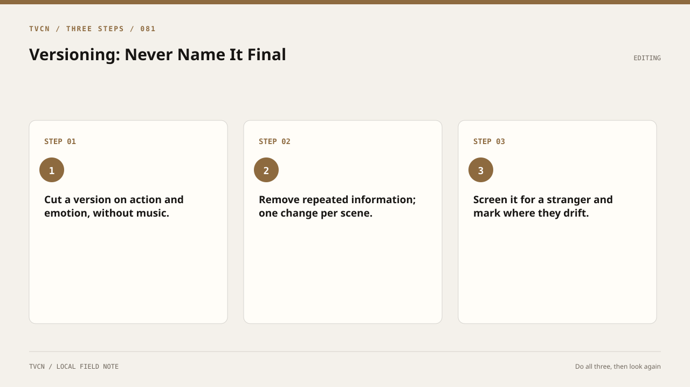

Version numbers only go up, with a change note
Use v001, v002, never “final” or “final2.” Every export gets one line: which scene, which shot, why. Without a note, a version number is just a number.
Keep current and previous in the working folder, archive older ones. State which version is the master at delivery so the client opens the right file.
Limits
More versions is not better. One purpose per pass, name it immediately; ten versions a day means no version control.
On set
Name files date_platform_duration_v3 and log every change: what changed, why, and who approved it.
Three-step flow

Do this
Version names carry date, platform, duration, and reason, never “final really final.”
- Name files date_platform_duration_v3, e.g. 20261122_web_60s_v3.
- Log what changed, why, and who approved it.
- Keep one current delivery and archive the rest; do not rely on memory.
Avoid
Do not use “latest” as a filename; in three months nobody knows what it is latest over.
Image note. Covers, diagrams and step images on this page are editorial illustrations or structure diagrams, not photographs of a test performed here; they are not evidence of measured gear performance. Where an image is AI-assisted, the caption says so. Read the test conditions in the text before treating an image as proof.